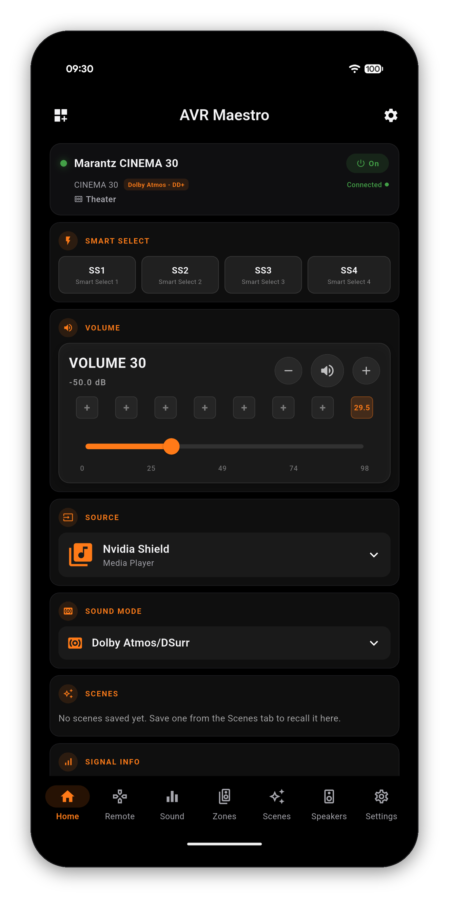

The X3800H is one of Denon's most popular Atmos powerhouses. AVR Maestro is the controller that matches it: fast, stable, and deep enough to reach everything the X3800H can do, from your phone. No cloud account, no subscriptions, no ads.

On the Denon AVR-X3800H, AVR Maestro controls every surround mode (Dolby Atmos, DTS:X, Auro-3D and the upmixers), Audyssey MultEQ and Dirac Live, whichever your speaker preset uses, speaker presets and channel levels, one-tap Scenes, Zone 2 and Zone 3, and the FM/AM tuner with presets.
Dolby Atmos, DTS:X, Auro-3D and the upmixers - with the active mode and channels shown live.
Switch MultEQ curves and Dynamic EQ/Volume, or pick Dirac Live filter slots by name - whichever your speaker preset uses.
Full layout, distances, channel levels and crossovers, following the active Speaker Preset.
Save the X3800H's entire state - input, mode, calibration, zones, tuner - and recall it instantly.
Independent Zone 2 / Zone 3 power, input and volume for whole-house audio.
The FM/AM tuner with presets, plus a live HEOS now-playing display with transport.
Denon AVR-A1H · Denon AVC-X8500HA · Denon AVR-X6800H · Denon AVR-X4800H · Denon AVR-X2800H · Denon AVR-X1800H · Denon AVR-S970H · Denon AVR-S770H · Marantz AV10 · Marantz AV8805 · Marantz Cinema 30 · Marantz Cinema 40 / 50 / 60 · Marantz Cinema 50 · Marantz SR7015 · Marantz SR6015
Getting started · Audyssey & Dirac control · User Guide · Help
One-time purchase, no ads, no subscriptions. Connect in under a minute.